A Scan-to-HBIM reconstruction of a medieval tower where two monumental Roman aqueducts — the Claudio–Anio Novus and the Marcia–Tepula–Giulia — cross at right angles. Laser scanning, photogrammetry and software interoperability turned a fragmentary archaeological ruin into a parametric, information-rich 3D model that reads its own construction history.
Scan-to-HBIMLaser ScanningPhotogrammetryAutodesk RevitRhinocerosMetashapeHeritage BIMArchaeology of Architecture
Bachelor's Degree in Building & Construction Engineering — Politecnico di Milano · Supervisor Prof. Fabrizio Banfi · Co-supervisors Dott. Stefano Roascio & Prof. Raffaella Brumana · In collaboration with the GIcarus Lab (Dept. ABC, PoliMi) and the Soprintendenza Speciale di Roma · A.Y. 2023/24, graduation March 2024
Roman aqueducts are among the most expressive symbols of ancient engineering — structures that ran for tens of kilometres and survived millennia of transformation. This thesis focuses on the stretch where two of them intersect twice at Tor Fiscale, in the Appia Antica Archaeological Park in Rome: the area historically known as the Campo Barbarico. The goal was to support the conservation of this built heritage with a digital HBIM (Heritage Building Information Modelling) reconstruction that faithfully reproduces the different construction phases — a possible base for future restoration or research.
28.7 m
Tower height
90°
Aqueducts crossing
6
Stratigraphic units
4
Interoperating software
🏰The Site & its HistoryPart 1 — Context
A medieval tower on Roman aqueducts
Tor Fiscale is a square-plan medieval tower, among the best preserved of the Roman countryside, standing at the 4th mile of the ancient Via Latina. First documented in 1277, it took its current name in the 17th century from Filippo Foppi, a papal fiscale (treasurer). Rising 28.7 m, it was accessed from the first floor — a clue to a defensive role — and its rooftop terrace, with a narrow 50 cm circular opening protected by a sentry box, confirms its use as a watchtower.
What makes it exceptional is the presence, beneath and around it, of the arches of two Roman aqueducts that cross twice: here the Claudio bends 90°, which is why the tower is thought to have served as a castellum aquae — a water-regulating node controlling flow and pressure.
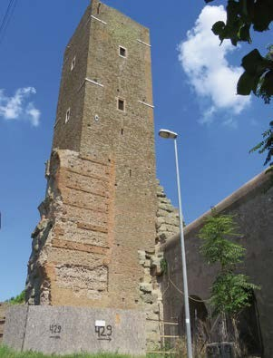
Tor Fiscale — the medieval tower rising above the surviving aqueduct arches, in the photogrammetric 3D model.
Two aqueducts, two eras
The two structures belong to different centuries and were built with different techniques — the key to reading the site's stratigraphy.
Acqua Marcia–Tepula–Giulia — II c. BC
The oldest: three superimposed channels (Marcia 144 BC at the base, Tepula 125 BC, Giulia 33 BC). Peperino blocks, ~2.5 m wide with a 60 cm channel.
Acquedotto Claudio–Anio Novus — I c. AD
Built 38–52 AD. The Claudia (52 AD) acts as the structural base for the Anio Novus channel (47 AD) above it — roughly-hewn opus quadratum in grey peperino. The tallest arches of its route (up to 28 m) are here.
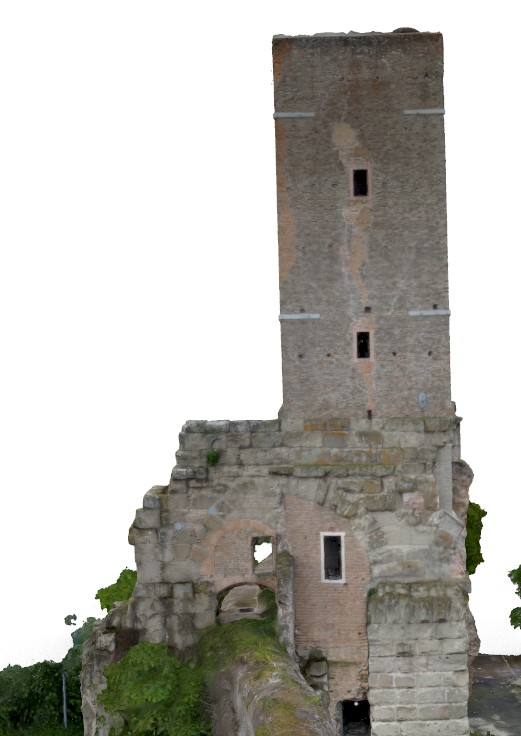
North side: the Roman opus quadratum in grey peperino, interrupted by brick levelling courses, under the medieval tufo tower.
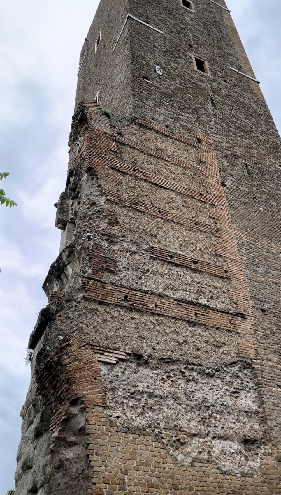
South side: the Hadrianic opus reticulatum with brick arches, lining the older aqueduct wall.
🛰️Survey & 3D CapturePart 2 — Scan
The survey campaign
Fieldwork took place on 18 May 2023. A local geodetic network with checkerboard targets georeferenced every acquisition. The detailed survey combined three complementary methods:
Terrestrial laser scanning (TLS)
FARO Focus 3D X 130 HDR — the backbone of the survey, generating a dense, millimetric point cloud of the tower and aqueducts.
UAV photogrammetry
A DJI Mavic Mini 2 reached ~30 m to capture the tower top and other areas unreachable from the ground.
Terrestrial photogrammetry
Canon EOS-1D Mark IV and Nikon D700, variable focal lengths — for texture, orthophotos and areas the laser could not reach.
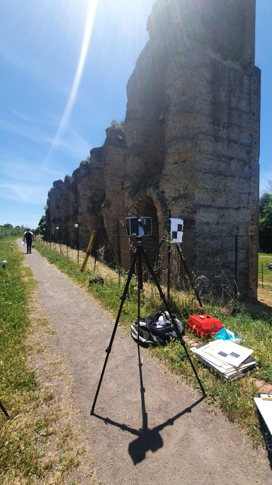
The FARO Focus 3D X 130 scanning the tower base, with a checkerboard target on the masonry.
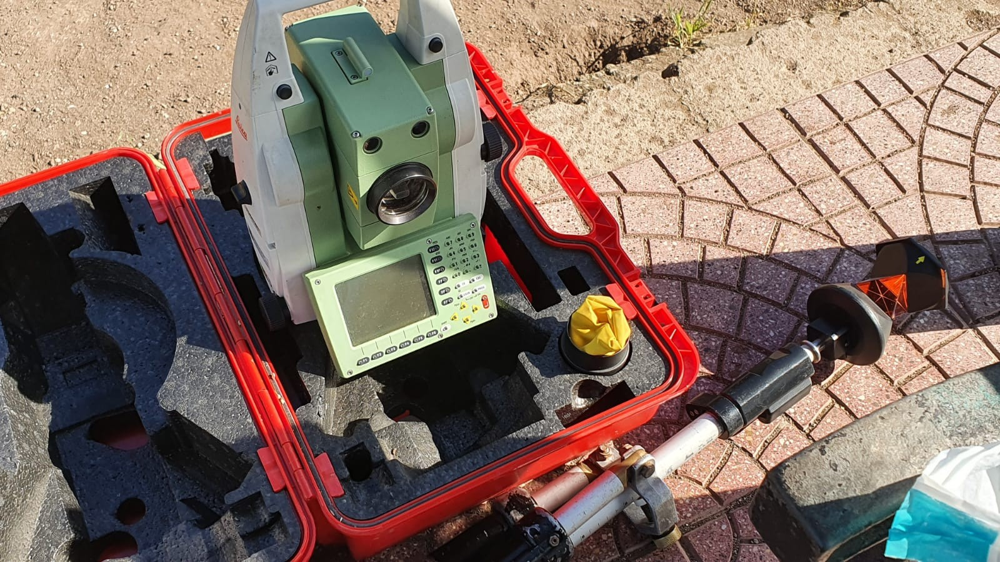
The Leica total station used to build the georeferenced control network.
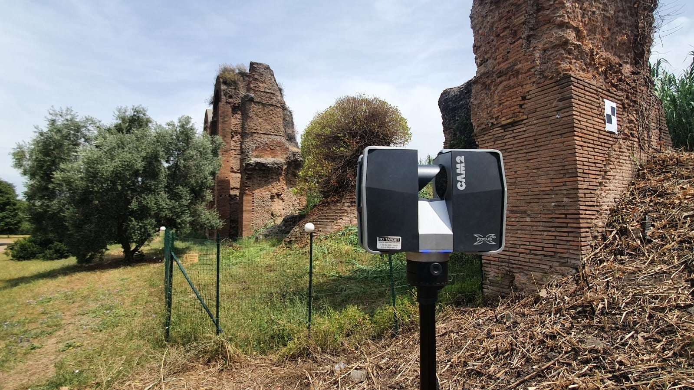
Scanning along the aqueduct front — the geodetic network (spheres and targets) tied every scan into a single reference system.
From points to a textured mesh
The TLS point cloud was processed in Autodesk ReCap Pro, the photogrammetric data in Agisoft Metashape. The cloud carries not only geometry but also height and intensity information — a rich picture of the as-found state of the monument.
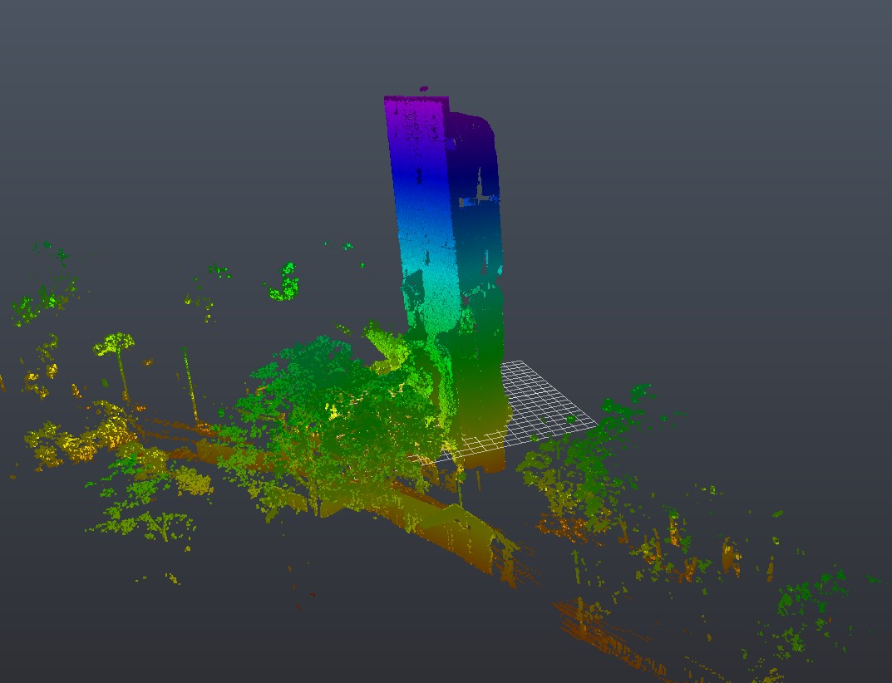
Point cloud colour-mapped by elevation — purple at the top of the tower down to warm tones at ground level.
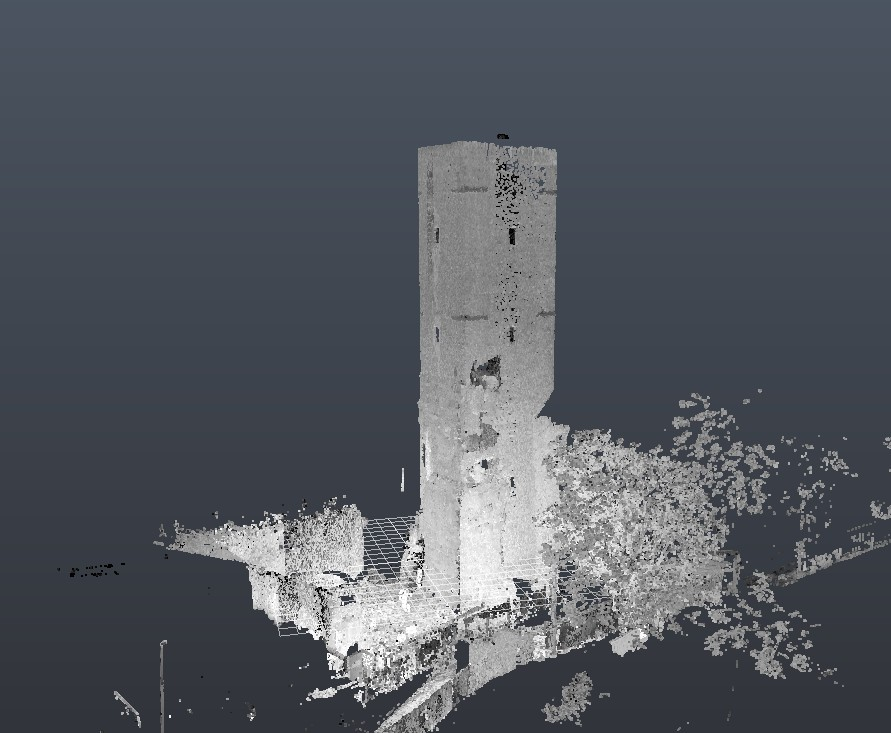
The same cloud in intensity greyscale, showing the density of the laser capture.
From the photogrammetric images, a textured mesh and georeferenced orthophotos were generated — the realistic surface model later used to trace precise profiles.
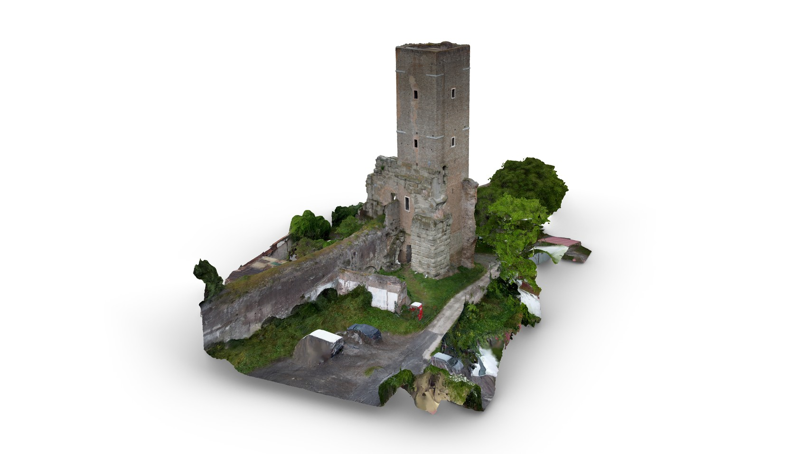
Textured mesh of the tower and site from photogrammetry.
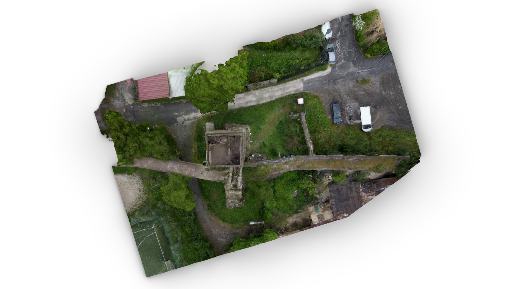
Georeferenced orthophoto from UAV imagery — the aqueduct arms and the tower crossing from above.
🧩Scan-to-HBIM & InteroperabilityPart 3 — Model
Why interoperability was essential
Historic structures resist standard BIM families: their geometry is irregular, degraded, and unique. A single tool cannot build an accurate parametric model from a point cloud, so the workflow chained several programs, each exchanging data without geometric loss:
Point cloud (ReCap / Metashape) → 2D drawings & NURBS surfaces (AutoCAD + Rhinoceros, DWG) → parametric walls in Revit via the "wall by face" command (GoG 6 extrusion, GoG 8 voids) → HBIM objects with embedded data (RVT / IFC / Excel).
Using surfaces derived from the textured mesh guaranteed that the extruded walls kept the real, irregular shapes of the ruin instead of approximations. Voids — such as the aqueduct speco (water channel) — were cut by solid subtraction, raising the level of detail.
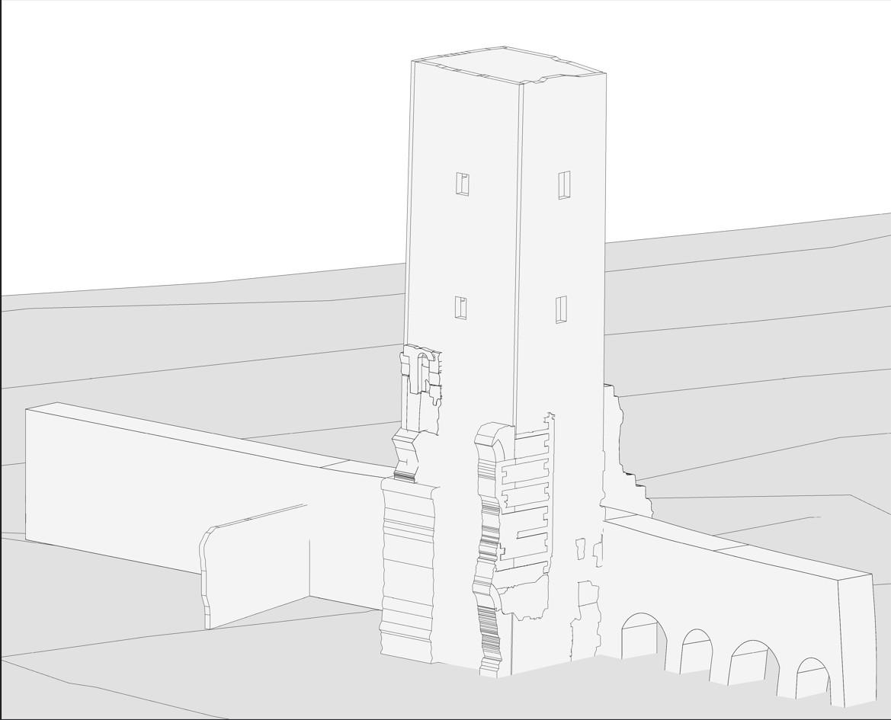
The parametric HBIM model coloured by stratigraphic unit: medieval tufo tower (green), Claudio channel in opus quadratum (light blue), Marcia walls (olive), Hadrianic brickwork (blue) and opus reticulatum (red), with the detailed section at the crossing.
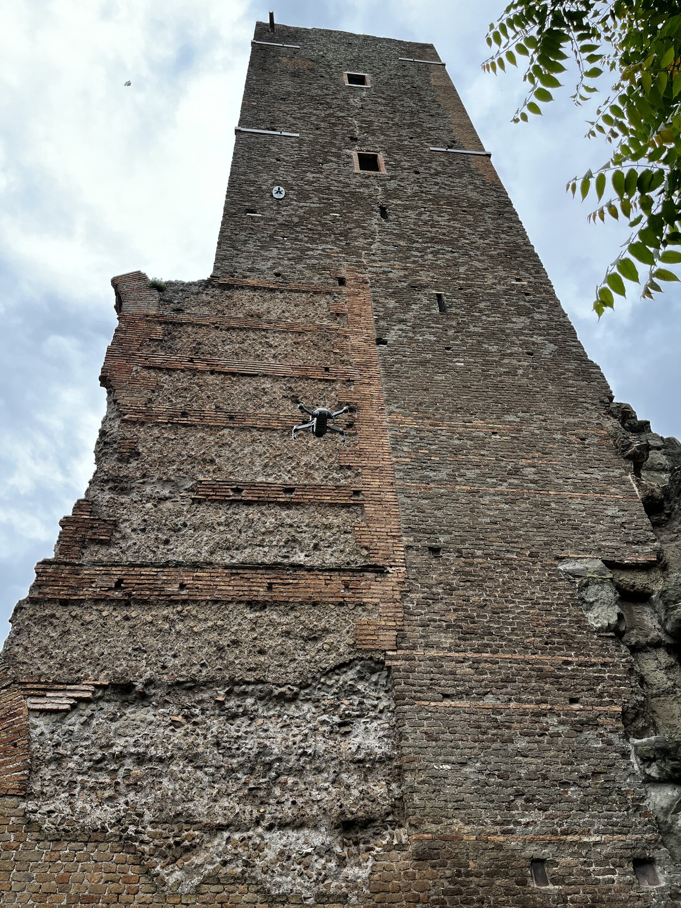
South façade: the Hadrianic opus reticulatum and brick arcades below the medieval tufo tower.
🧱Stratigraphic Units & PhasesPart 4 — Interpretation
Reading the construction history
Following the "Archaeology of Architecture" approach, the model was split into six stratigraphic units (US), each modelled as a separate parametric wall and distinguished by material and technique. This made it possible to assign each element its own properties and to infer the chronological sequence of construction and restoration.
A parametric, queryable model
In Revit, each stratigraphic-unit object carries an "Identity Data" record: a linked orthomosaic image, its epoch, a unique code (first letter = structure: T, C, M, A; number = US 1–6; a letter for orientation), the construction technique, the stratigraphic unit, and the construction phase. These data export to Excel, forming the base of a true database that can later host diagnostic surveys.
The volumetric split lets the model tell its own story: the Marcia was built first (it is overridden by both tower and Claudio); the Claudio sits at the tower's base, so it predates the tower and the Anio Novus above it; the Hadrianic reticulate work on the south façade postdates both aqueducts; and the regular tufo courses date the tower to the late 12th–13th c.
Stratigraphic units legend
US 1 — Medieval tower (tufo)
End of 12th–13th c. Regular courses of tufo blocks — the tower itself.
US 2 — Opus quadratum (grey peperino)
I c. AD. The channel of the Claudio–Anio Novus aqueduct.
US 3 — Acqua Marcia (peperino)
II c. BC. Walls of the Marcia–Tepula–Giulia — the oldest structure.
US 4 — Hadrianic brickwork (laterizio)
Hadrianic-era brick arches lining the opus quadratum from within.
US 5 — Hadrianic opus reticulatum
Reticulate masonry restoration, strengthening and sealing the structure.
US 6 — Modern restoration (travertine)
Later repairs, mostly in travertine, where looting and decay had taken their toll.
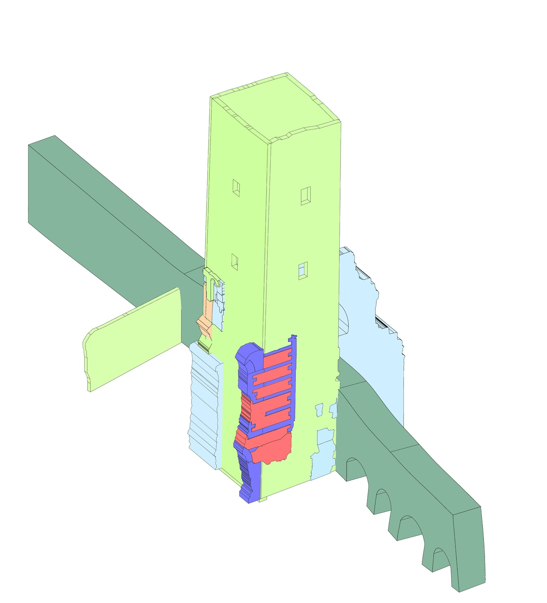
Construction phases exploded — the two aqueducts (olive & light blue), the Hadrianic reinforcements (blue/red) and the medieval tower (green).
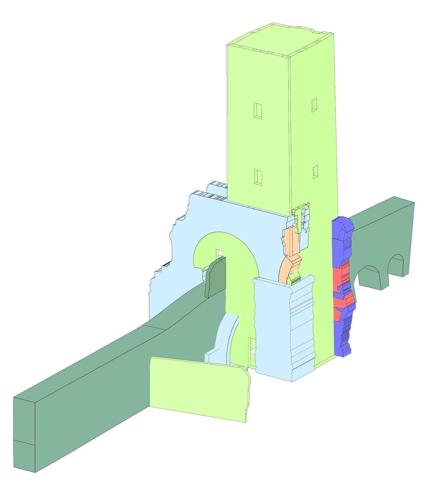
The same decomposition from the opposite side, exposing the brick-and-reticulate restoration lining the channel.
From model to documented objects
Each stratigraphic unit becomes a self-describing HBIM object. Two worked examples show the pattern — the parametric geometry on one side, the real masonry it reproduces, and the Identity Data record that makes the model queryable.
Example 1 — The Claudio–Anio Novus channel (US 2)
From a stratigraphic unit in the model to a fully documented HBIM object: the parametric wall, its real masonry, and the embedded identity record.
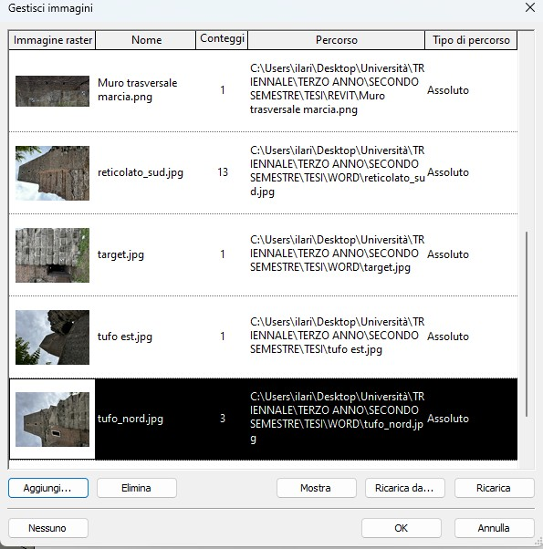
The modelled wall isolated in Revit.
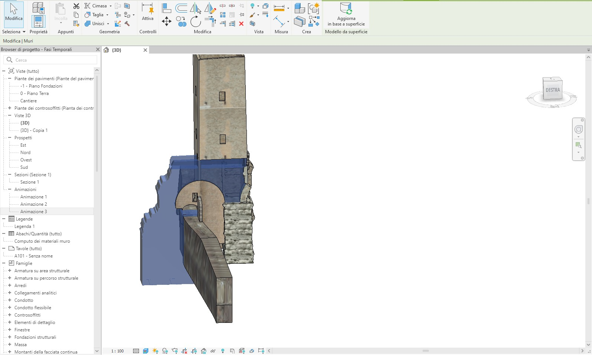
The real aqueduct masonry it reproduces.
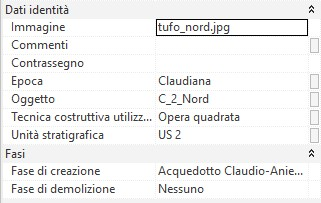
Identity data: epoch, object code, technique, stratigraphic unit, phase.
Example 2 — The west façade of the tower (US 1)
The same workflow applied to the medieval tufo tower: parametric geometry, the physical wall, and its queryable parameters.
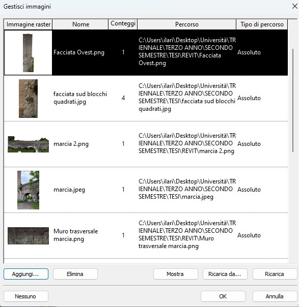
The west-façade wall isolated in Revit.
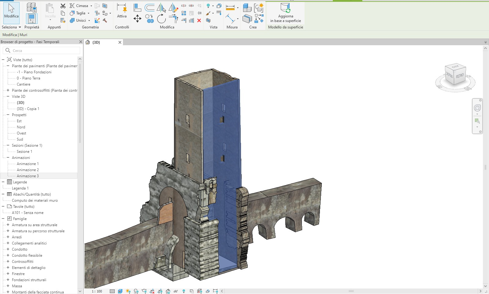
The tufo masonry of the tower.
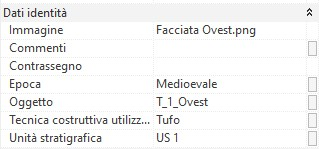
Identity data for the medieval tower (US 1, Tufo).
What the HBIM delivers
The model is designed as a shared, extensible tool — a "magnet" that attracts documents, hypotheses, geometric matrices and mensiochronological analyses:
Recognises and defines stratigraphic units through the Archaeology of Architecture, giving volumetric body to the readable masonry layers;
Enables synchronic and diachronic analysis — comparing forms, materials and techniques across phases and restorations;
Serves as a base for future study of other aqueduct stretches, available to researchers, authorities and professionals;
Opens toward virtual/augmented reality for a dynamic museum experience — and could even support a project for a visitor lift inside the tower.
Future developments: pairing the BIM/laser workflow with NURBS surfaces for even higher geometric reliability and lighter models, and extending the HBIM into virtual reality to amplify public awareness of this heritage.